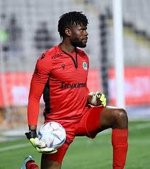
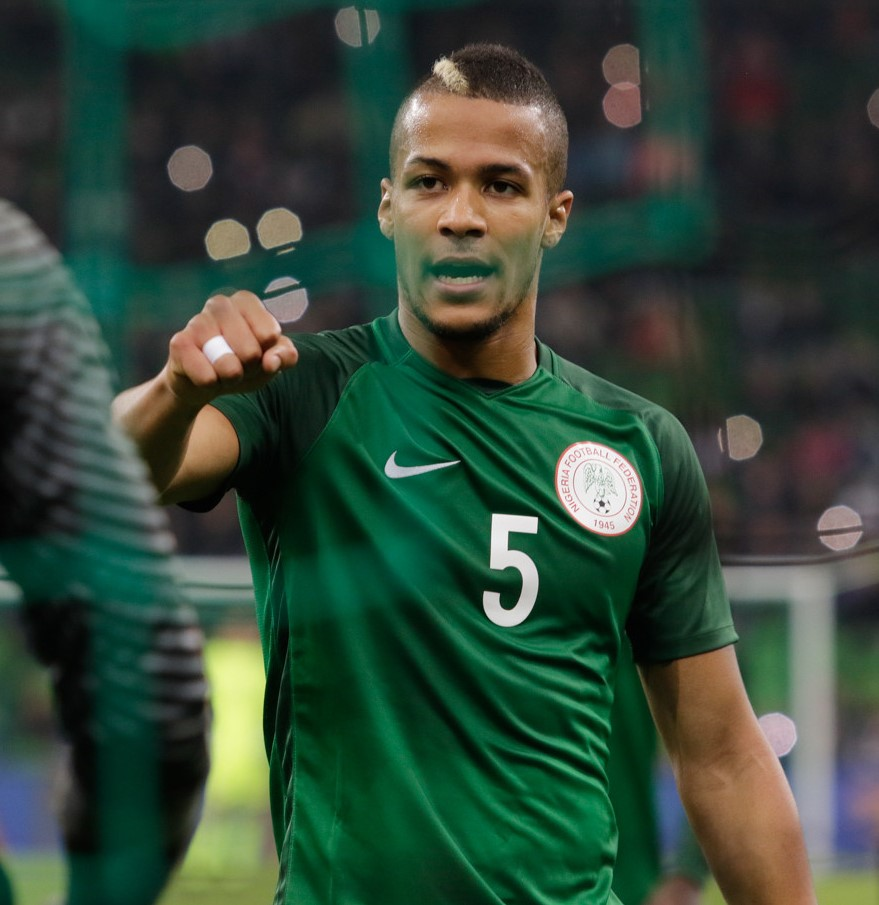
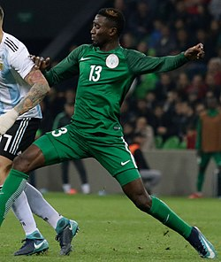
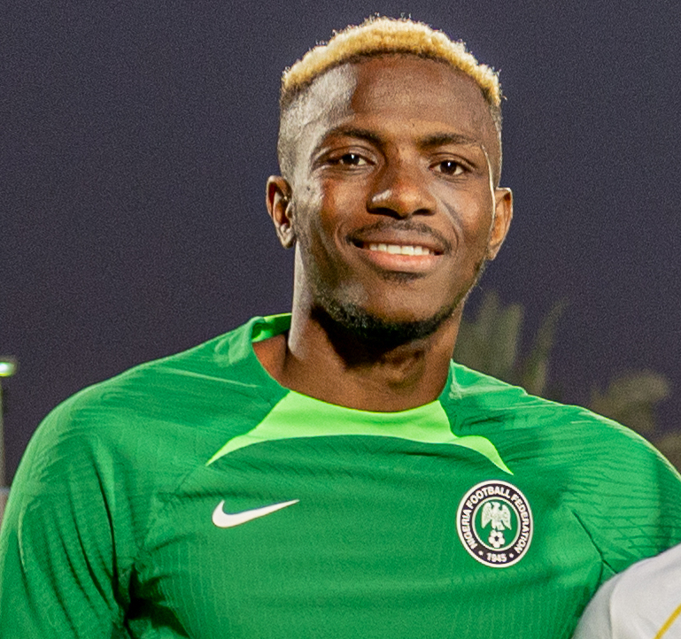

| Francis Uzoho |
Portero |
26 |
Francis Uzoho (Nwangele, 28 de octubre de 1998) es un portero nigeriano que juega en el AC Omonia de Chipre. |
 |
| William Troost-Ekong |
Defensa central |
31 |
William Troost-Ekong (Haarlem, Países Bajos, 1 de septiembre de 1993) es un defensor nigeriano que juega en el PAOK de Grecia. |
 |
| Wilfred Ndidi |
Mediocampista |
28 |
Wilfred Ndidi (Lagos, 16 de diciembre de 1996) es un mediocampista nigeriano que juega en el Leicester City. |
 |
| Alex Iwobi |
Mediocampista |
29 |
Alex Iwobi (Lagos, 3 de mayo de 1996) es un mediocampista nigeriano que juega en el Fulham. |
 |
| Victor Osimhen |
Delantero |
26 |
Victor Osimhen (Lagos, 29 de diciembre de 1998) es un delantero nigeriano que juega en el Napoli de Italia. |
 |
| Ademola Lookman |
Extremo |
27 |
Ademola Lookman (Londres, 20 de octubre de 1997) es un extremo nigeriano que juega en el Atalanta de Italia. |
 |